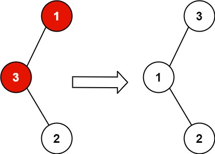
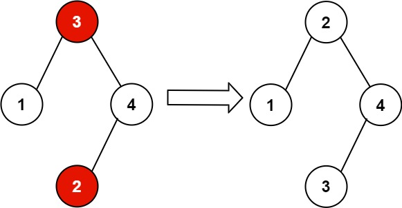

| Category | Difficulty | Likes | Dislikes |
|---|---|---|---|
| Algorithms | Medium | 8494 | 284 |
tree | depth-first-search | binary-search-tree | binary-tree
amazon | microsoft | google | facebook | medianet | tiktok
You are given the root of a binary search tree (BST), where the values of exactly two nodes of the tree were swapped by mistake. Recover the tree without changing its structure.
Example 1:

Input: root = [1,3,null,null,2]
Output: [3,1,null,null,2]
Explanation: 3 cannot be a left child of 1 because 3 > 1. Swapping 1 and 3 makes the BST valid.Example 2:

Input: root = [3,1,4,null,null,2]
Output: [2,1,4,null,null,3]
Explanation: 2 cannot be in the right subtree of 3 because 2 < 3. Swapping 2 and 3 makes the BST valid.
Constraints:
[2, 1000].-231 <= Node.val <= 231 - 1Follow up: A solution using
O(n) space is pretty straight-forward. Could you devise a constant O(1) space solution?